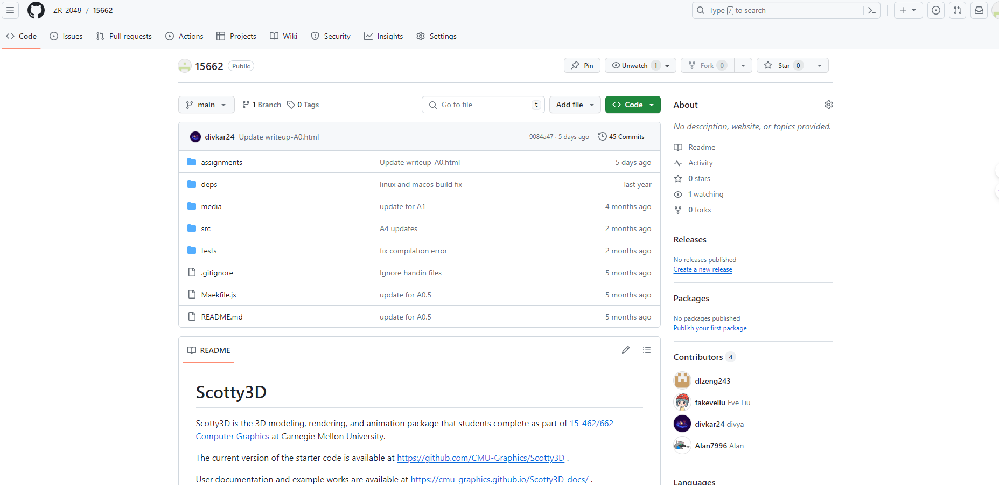

**Assignment 0 Report**
AndrewID: zhengren
(##) About this template
* You can view your writeup by opening it in a browser - right click this file and open with your browser of choice.
* Replace reference images with your own screenshots or renders when applicable.
* Include descriptions of any encountered problems and the time you spent on each task.
(##) A0T1
Step 1: Clone
or

Step 2: General Setup
Visual Studio:
Node:
Nest-libs:
Step 3: Build and Run
(##) A0T2
Your completion of this task will be graded based on your `test.a0.task2.problems.cpp` file and your responses to the below questions.
For each of the problems you solved in task 2, characterise the bug in your own words and explain one other scenario that may cause this
type of bug.
Problem 1:
The compiler bug is due to 2 mistakes:
1. There is a semicolon missing at the end of printf line;
2. We don't use namespace std, there should be std:: before cout.
The reason why such errors occur may because carelessness when fast typng.
Problem 2:
The result of the operation between int and int is also a round down int.
When the result is greater than a third but less than two third, it is equal to or less than a third of y, which will lead to miscount.
We can fix the problem by changing one or more x, y, helper's type to float.
Problem 3:
This problem is mainly due to the misunderstanding of the function and the pointer.
When we call vector.end(), it returns a iterator that refers to the next position of the last elemnt.
So we should either change the reference to *(vector.end()-1) or use vector.back()
Problem 4:
To judge the equality of 3 variables cannot use two equal signs, instead use the "&&" operation to connect two judgement expressions.
(##) A0T3
You do not need any screenshots for this task. Your completion will be graded based on your `src` submission.
(##) Feedback
Use this section to provide feedback about the assignment.